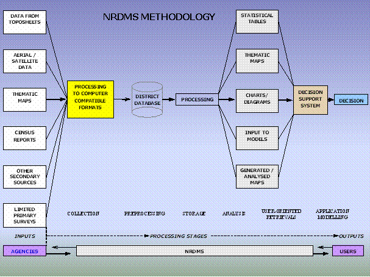

NRDMS programme aims to analyze the evolution of methodologies and techniques for formulating development strategies. In a scenario of large diversity of data sets, data users and data generating agencies, the programme aims at developing and demonstrating the use of spatial decision support tools for integrated planning and management of resources at the local level. The NRDMS programme uses both maps and textual data collected from various data generating agencies and remote sensing sources. Maps are digitized and stored on a computer as a series of thematic data layers. Depending on the real unit of planning, maps on 1:250,000, 1:50,000 and cadastral scales are utilized. Data on natural resources, demography, agro & socio-economy and infrastructural facilities for a district form the core database. Those pertaining to specific problems of an area constitute the sectoral database. Textual data obtained from secondary sources are normally stored with village as a unit. Data gaps are filled in by limited primary surveys. Various decision support systems \ modules built into the system help process the data and generate alternative scenarios for making optimal planning decisions. Outputs in the form of thematic maps, tables and reports based on spatial analysis are obtained from the database as per the user requirements.
The diagram below indicates broadly the methodology adopted in the NRDMS project.

A geographic information system (GIS), captures, stores, analyzes, manages, and presents data that is linked to location. Technically, GIS is geographic information systems which includes mapping software and its application with remote sensing, land surveying, aerial photography, geo-positioning system, mathematics, photogrammetry, geography, and tools that can be implemented with GIS software. GIS applications are tools that allow users to create interactive queries (user created searches), analyze spatial information, edit data, maps, and present the results of all these operations.
GIS have taken advantage of rapid developments in Information technology over the past several decades to address the spatial challenges of storing and analyzing spatial data. GIS belongs to the class of computer systems that require the building of large databases before they actually become useful. Actually, the use of a GIS requires that large spatial database be created, appropriate hardware / software be procured and installed, applications be developed, installed, integrated and tested before users can use the GIS and realize the benefit.
The role of a GIS in a government setup is more than simply automating a few obvious tasks for the sake of efficiency. A local government or zilla panchayath should view the GIS project as an opportunity to introduce fundamental change into the way its business is conducted. Just as MIS / EIS in corporate business world, the adoption of GIS effectively reorganises the data and information that the government collects, maintains and uses to conduct its affairs. This will lead to major changes in the institution both effectiveness and efficiency of operations. NRDMS uses corporate database concept to integrate GIS data for all units of Zilla Panchayath participating in a co-operative GIS program. Establishing the corporate database is much more a question of policy, management co-operation and co-ordination.